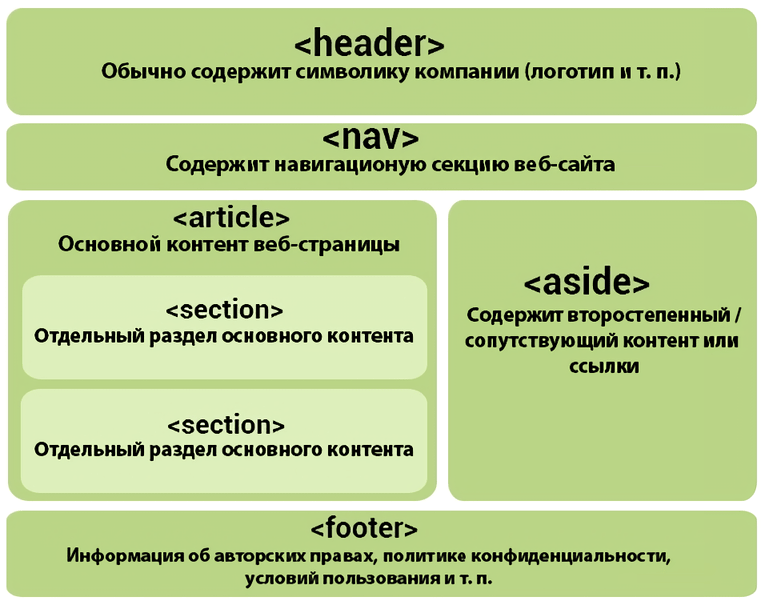

⇐ Назад
В главное меню
Продолжить ⇒
Прогресс завершения курса:
Строение страницы в HTML5
Обычно структура HTML5-страницы выглядит так:

Все эти элементы спокойно можно заменить тегами
<
div
>
. Они нужны для повышения читаемости кода человеком.
⇐ Назад
В главное меню
Продолжить ⇒